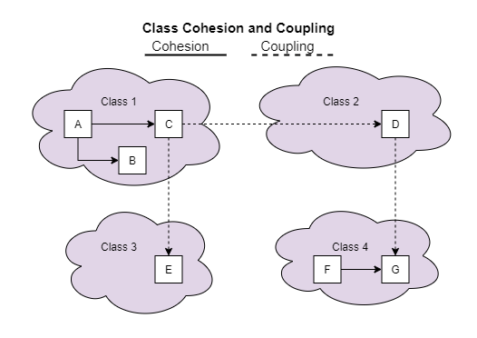
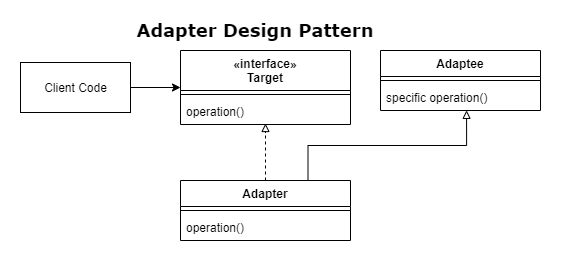

SOLID Principles 👷🏼♂️👷🏼♀️
Single Responsibility Principle
A class should only have one reason to change.
Types of responsibilities:
- persistence
- logging
- validation
- business logic (broad category, can be broken down further)
Responsibilities change at different times for different reasons.
Separation of Concerns
Programs should be separated into discreet sections, each one addressing a separate concern or set of information that affects the program.
Cohesion
Class elements that belong together are cohesive

SRP and Testing
It is easier to test one responsibility in isolation.
If classes have lots of responsibilities, tests become:
- longer
- more complex
- brittle
- coupled with implementation
Open / Closed
Software entities (classes, modules, functions, etc) should be open for extension but closed for modification.
Should be possible to change the behaviour of a method without editting its source code.
| open to extension | closed to modification |
|---|---|
| new behviour can be added in future | changes to source/binary code are not required |
| code that is closed to extension has fixed behaviour | the only way to change behaviour of code that is closed to extension is to modify the code itself. |
switch statements notoriously break the open/closed principle, e.g.
switch (policy.Type) {
case PolicyType.Auto: ...
case PolicyType.Life: ...
}
Also Enum can be a bit of a code smell.
OCP is a balancing act between abstraction and concretion.
Predicting Future Change
OCP tends to be applied retrospectively - once you know how things are likely to change.
- start by coding something concrete
- modify code the first few times as requirements change
- by the third modification consider making the code open to expansion.
Typical Approaches to OCP
- parameters
- inheritance
- composition/injection
It's preferable to implement new features in new classes. New classes aren't coupled in any way to the existing system.
OCP also applies to; packages & libraries, microservices.
Articles
https://bit.ly/2LSXOuo Uncle Bob on OCP Jon Skeet on OCP
Liskov Substitution Principle
A base class should be able to be replaced by its derived class without any change of functionality.
LSP states that a IS-A relationship is insufficient and should be replaced with IS-SUBSTITUTABLE-FOR
Derived classes should add functionailty rather than remove it.
Type Checking breaks LSP
foreach(var employee in employees) {
if(employee is Manager) { // LSP violation
Helpers.PrintManager(employee as Manager); // LSP violation
break;
}
Helpers.PrintEmployee(employee);
}
Fixing LSP Violations
Use "Tell, Don't Ask"
e.g. in the above sample code, have an employee.Print() method. This way the employee can decide whether to print as an employee or a manager. (however you are potentially breaking SRP here)
Minimize Null Checks
Use:
- c# nullable reference types
- guard clauses
- Null Object Design Pattern
Follow Interface Segregation Principle
And be sure to fully implement interfaces.
Interface Segregation Principle
Clients should not be forced to dpend on methods they do not use. Prefar small cohesive interfaces to large interfaces.
What is an interface?
- C#/Java interface
- public (or accessible) interface of a class
A type's interface in this context is whatever can be accessed by client code working with an instance of that class.
Detecting ISP violations
- interfaces with more than 5-10 methods
NotImplementedExceptionhighlights methods that aren't being used.- code using a small subset of a larger interface
Can also apply ISP to domain modelling.
Multiple interface inheritance
Interfaces can inherit from multiple interface - this is useful for legacy code that relies on large interfaces. Can split the large interface into smaller interfaces and then recombine them back into a single interface.
Fixing ISP violations
Addressing large interfaces you don't control
- create small cohesive interfaces
- use the Adapter Design Pattern so your code can work with the Adapter.

Where do interfaces live in your application?
Client code should define and own the interfaces it uses. Interaces shouldn't be declared in the same place as the implementation as this affects the directionality of the dependencies by forcing your client to depend on the implementation.
Dependency Inversion Principle [DIP]
High level modules (e.g. business logic) should not depends on low level modules (e.g. infrastructure). Both should depend on ABSTRACTIONS
ABSTRACTIONS should not depend on DETAILS.
DETAILS should depend on ABSTRACTIONS.
Dependencies
references required to compile or run (e.g. reflection)
Abstractions
Describe 'what needs to be done' (but not how)
- interfaces
- abstract base classes
- types that cannot be instantiated (broadly speaking)
Details
Describe the 'how' of what needs to be done
Can also include:
- details as parameters
- details as return types
Examples of low level dependencies
- databases
- files system
- configuration
- Web APIs
- system clock
Hidden Direct Dependencies
static calls and new keyword, could indicate a direct dependency. These can create tight coupling which can make it difficult to isolate and unit test and can cause duplicated code.
Using new - 'new is glue'
- it creates coupling
- do you need to specify an implementation?
- could you use an abstraction instead?
Explicit Dependency Principle
Your classes shouldn't have hidden dependencies in them. List your classes dependencies upfront, in the constructor. Think of them like the ingredients in a recipe - it's best if you know exactly what you need, before you start!
Dependency Injection [DI]
You don't create your own dependencies, it's the client's job to inject them into your class. (and naturally your class so declare it's dependencies as abstractions)
Dependencies can be injected as:-
- constructor arguments (preferred method)
- properties
- method arguments
By using constructor arguments it's possible to leverage IOC (Inversion of Control) containers to construct types and their dependencies.
See also the Strategy Design Pattern